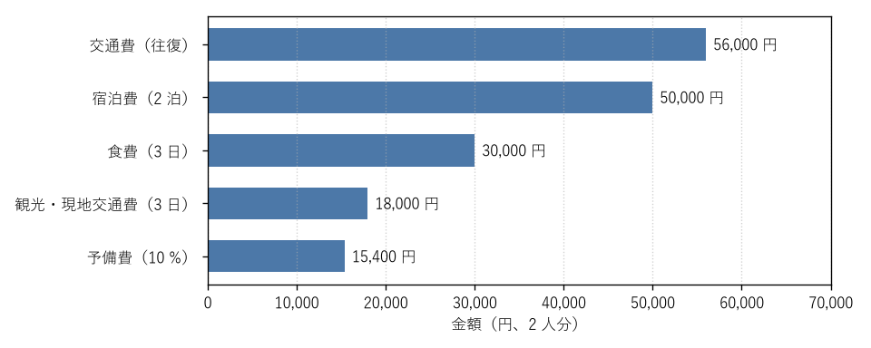

6. 費用と支払い
この章では、旅行の費用の内訳、支払手段、費用を抑える方法、保険、2 人で旅行する場合の費用の分担について説明する。予算の見積もり方は旅行の計画を立てるで説明した。
6.1. 費用の内訳
旅行の費用は、主に交通費、宿泊費、食費、観光・現地交通費からなる。旅行の計画を立てるで見積もった、2 人で 2 泊 3 日の旅行の例の内訳を次の図に示す。

図: 2 人で 2 泊 3 日の旅行をする場合の費用の内訳の例
この例では、交通費と宿泊費が全体の 6 割以上を占める。費用を抑えたい場合は、この 2 つを見直すと効果が大きい。そのほか、土産物、宿泊にかかる税（宿泊の手配 を参照）、駐車場の料金、施設の入場料なども忘れずに見込む。
6.2. 支払手段
旅行中の支払いには、クレジットカード、交通系 IC カード、スマートフォンのコード決済などのキャッシュレス決済が広く使える。キャッシュレス決済を使うと、利用履歴が残るため、旅行後の精算や支出の確認がしやすい。
一方で、次のような場面では現金が必要になることがある。
小規模な飲食店や土産物店
地方の路線バスや一部のタクシー
寺社の拝観料やお守り、賽銭
温泉の共同浴場、駐車場、コインロッカー
キャッシュレス決済が使えない場合に備えて、ある程度の現金も持って行く。現金は 1 か所にまとめず、財布と別の場所にも分けて持つと、紛失や盗難の際の被害を減らせる。
6.3. 費用を抑える方法
費用を抑えるには、次の方法がある。
交通機関の早期割引や、インターネット限定の割引のきっぷを使う（移動手段の手配 を参照）。
繁忙期と週末を避け、平日に旅行する。
交通と宿泊のセット商品を利用する。
宿泊施設で連泊すると料金が割り引かれるプランを選ぶ。
予約サイトやクレジットカードのポイントを使う。
自治体などが実施する観光の割引や支援の制度を調べる。
ただし、割引の大きいきっぷや料金プランほど、予約の変更やキャンセルの条件が厳しい傾向がある。予定が変わる可能性も考えて選ぶ。
6.4. 保険
旅行中のけがや、急な病気による旅行のキャンセルに備える保険には、次のものがある。
保険 |
内容 |
|---|---|
旅行中のけがによる入院や通院、死亡などを補償する。損害保険会社のほか、交通機関の予約時に申し込めるものもある。 |
|
クレジットカードに付帯する保険 |
国内旅行傷害保険が付帯するクレジットカードがある。旅行代金をそのカードで支払うことが補償の条件になっている場合があるため、条件を確認する。 |
キャンセル保険 |
本人や家族の病気などで旅行をキャンセルした場合のキャンセル料を補償する。予約サイトなどで加入できるものがある。 |
旅行先で病院にかかる場合に備えて、健康保険の資格を確認できるマイナ保険証または資格確認書を持って行く。
6.5. 2 人での費用の分担
2 人で旅行する場合、予約や支払いをどちらか一方がまとめて行い、旅行後に精算することが多い。旅行前に、費用をどのように分けるか（折半にするか、一部の費用だけ各自で払うか）を決めておく。
費用を折半する場合、それぞれが立て替えた金額から精算額を次の式で求められる。
ここで、\(a\) は A さんが支払った金額の合計、\(b\) は B さんが支払った金額の合計、\(x\) は B さんが A さんに支払う金額である。\(x\) が負の値になった場合は、A さんが B さんにその絶対値の金額を支払う。
例えば、A さんが交通費と宿泊費などで 100,000 円、B さんが食費などで 69,400 円を支払った場合、精算額は次のようになる。
B さんが A さんに 15,300 円を支払うと、2 人の負担はそれぞれ 84,700 円で等しくなる。誰が何にいくら支払ったかを旅行中に記録しておくと、精算が楽になる（帰宅後にすること を参照）。